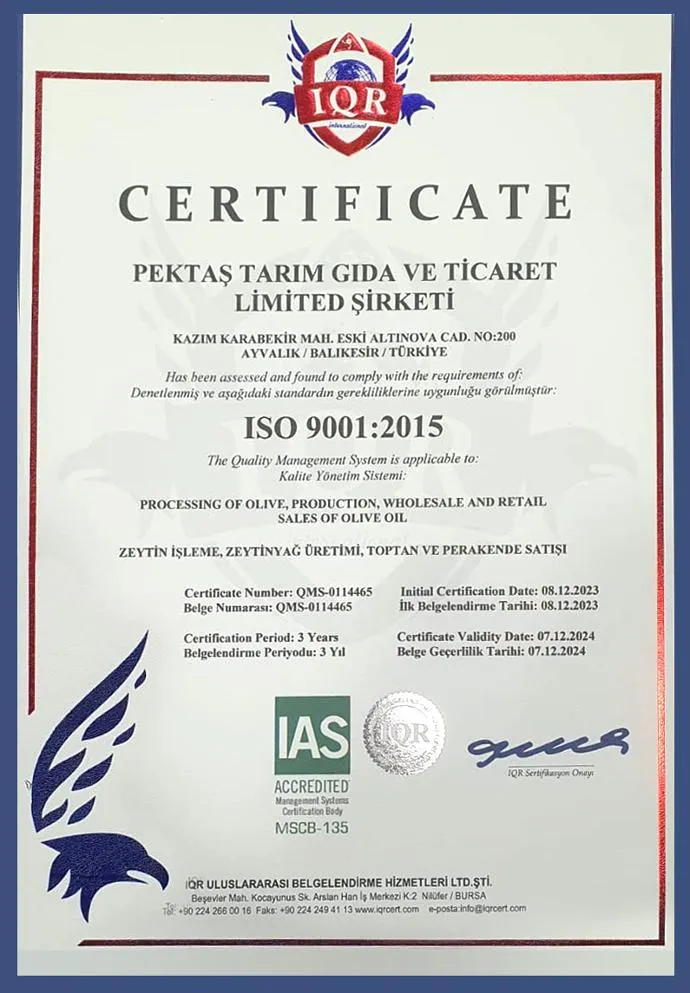

Belgeyi büyüt ↗
ISO 9001:2015
Kalite Yönetim Sistemi
Müşteri memnuniyetini artırmayı ve kalite yönetim sistemlerini sürekli iyileştirmeyi hedefleyen uluslararası bir standarttır. Bu sertifika, iş süreçlerimizi etkin ve verimli biçimde yürüttüğümüzü; müşteri ihtiyaçlarına uygun, tutarlı ve kaliteli ürün ve hizmetler sunduğumuzu belgelendirir.